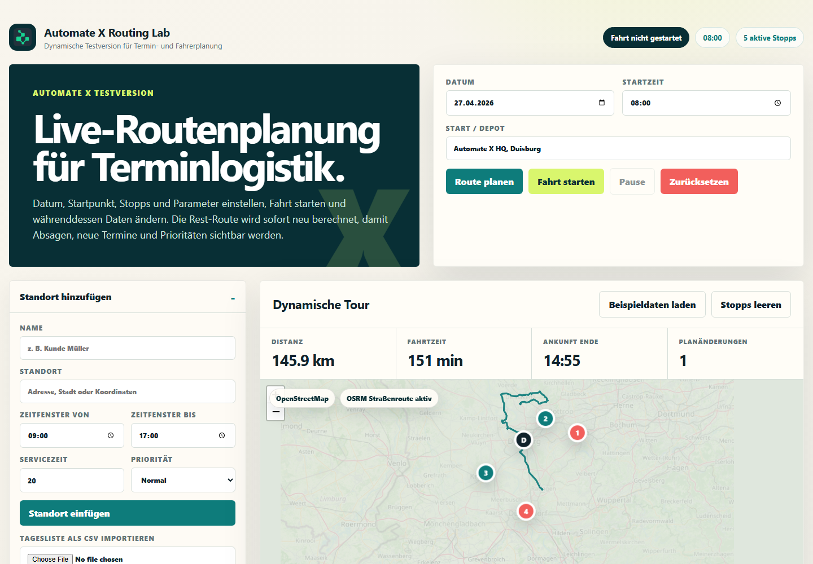

Touren automatisch planen
Stopps clustern, Reihenfolge berechnen und Fahrtzeiten mit Zeitfenstern abgleichen.
Mehr erfahren ›Jetzt Tourdaten eingeben und in wenigen Schritten sehen, wie KI Stopps, Fahrer, Zeitfenster und Eilaufträge besser verteilt.
Stopps clustern, Reihenfolge berechnen und Fahrtzeiten mit Zeitfenstern abgleichen.
Mehr erfahren ›Absagen, neue Termine und Verkehrsfaktoren werden in die Resttour eingerechnet.
Demo ansehen ›Kapazitäten, Schichten, Startpunkte und Prioritäten werden pro Route berücksichtigt.
Analyse starten ›Die KI beachtet nicht nur Distanz. Sie prüft Zeitfenster, Servicezeiten, Prioritätskunden, Fahrerprofile und Fahrzeugkapazitäten. So entstehen Touren, die im Alltag funktionieren.
Wenn ein Termin per Mail abgesagt wird, kann die Demo den betroffenen Stopp erkennen, entfernen und die verbleibende Route neu sortieren. Freie Zeitfenster werden für passende Aufträge nutzbar.

Wir starten pragmatisch mit einer Tagesliste. Danach werden echte Regeln ergänzt: Fahrer, Fahrzeuge, Regionen, Prioritäten und Integrationen. Der Nutzen wird über Kilometer, Fahrzeit und Planungsaufwand gemessen.
Beschreiben Sie Ihre Tourenplanung oder senden Sie eine typische Tagesliste. Wir prüfen, wo KI-Routenoptimierung zuerst Wirkung zeigt.
Routenoptimierung lohnt sich, wenn Disposition jeden Tag mit kurzfristigen Änderungen, engen Zeitfenstern und vielen Stopps arbeitet. AutomateX verbindet eine einfache Oberfläche mit nachvollziehbaren KI-Entscheidungen.
Der erste Test funktioniert mit CSV und Beispielrouten, ohne direkt ein großes Systemprojekt zu starten.
Kilometer, Fahrzeit, Planänderungen und Auslastung werden transparent gegenübergestellt.
Neue Aufträge, Absagen und Verkehrslagen werden in der laufenden Tour sichtbar.
Die Lösung entsteht aus praktischer Umsetzung und Forschung zu Prozessinnovation an der Universität Duisburg-Essen.
Für den Start reichen Stopps, Adressen, Zeitfenster und Servicezeiten. Fahrer und Fahrzeuge verbessern die Optimierung.
Ja. Die Routing-Demo ist verlinkt und zeigt Live-Neuplanung, CSV-Import und Gmail-Absagen als Prototyp.
Für Gmail muss in Google Cloud die aktuelle Origin als Authorized JavaScript origin eingetragen sein.